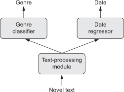

This chapter covers
This chapter explores a number of powerful tools that will bring you closer to being able to develop state-of-the-art models on difficult problems. Using the Keras functional API, you can build graph-like models, share a layer across different inputs, and use Keras models just like Python functions. Keras callbacks and the TensorBoard browser-based visualization tool let you monitor models during training. We’ll also discuss several other best practices including batch normalization, residual connections, hyperparameter optimization, and model ensembling.
Until now, all neural networks introduced in this book have been implemented using the Sequential model. The Sequential model makes the assumption that the network has exactly one input and exactly one output, and that it consists of a linear stack of layers (see figure 7.1).
Figure 7.1. A sequential model: a linear stack of layers
This is a commonly verified assumption; the configuration is so common that we’ve been able to cover many topics and practical applications in these pages so far using only the Sequential model class. But this set of assumptions is too inflexible in a number of cases. Some networks require several independent inputs, others require multiple outputs, and some networks have internal branching between layers that makes them look like graphs of layers rather than linear stacks of layers.
Some tasks, for instance, require multimodal inputs: they merge data coming from different input sources, processing each type of data using different kinds of neural layers. Imagine a deep-learning model trying to predict the most likely market price of a second-hand piece of clothing, using the following inputs: user-provided metadata (such as the item’s brand, age, and so on), a user-provided text description, and a picture of the item. If you had only the metadata available, you could one-hot encode it and use a densely connected network to predict the price. If you had only the text description available, you could use an RNN or a 1D convnet. If you had only the picture, you could use a 2D convnet. But how can you use all three at the same time? A naive approach would be to train three separate models and then do a weighted average of their predictions. But this may be suboptimal, because the information extracted by the models may be redundant. A better way is to jointly learn a more accurate model of the data by using a model that can see all available input modalities simultaneously: a model with three input branches (see figure 7.2).
Figure 7.2. A multi-input model
Similarly, some tasks need to predict multiple target attributes of input data. Given the text of a novel or short story, you might want to automatically classify it by genre (such as romance or thriller) but also predict the approximate date it was written. Of course, you could train two separate models: one for the genre and one for the date. But because these attributes aren’t statistically independent, you could build a better model by learning to jointly predict both genre and date at the same time. Such a joint model would then have two outputs, or heads (see figure 7.3). Due to correlations between genre and date, knowing the date of a novel would help the model learn rich, accurate representations of the space of novel genres, and vice versa.
Figure 7.3. A multi-output (or multihead) model

Additionally, many recently developed neural architectures require nonlinear network topology: networks structured as directed acyclic graphs. The Inception family of networks (developed by Szegedy et al. at Google),[1] for instance, relies on Inception modules, where the input is processed by several parallel convolutional branches whose outputs are then merged back into a single tensor (see figure 7.4). There’s also the recent trend of adding residual connections to a model, which started with the ResNet family of networks (developed by He et al. at Microsoft).[2] A residual connection consists of reinjecting previous representations into the downstream flow of data by adding a past output tensor to a later output tensor (see figure 7.5), which helps prevent information loss along the data-processing flow. There are many other examples of such graph-like networks.
Christian Szegedy et al., “Going Deeper with Convolutions,” Conference on Computer Vision and Pattern Recognition (2014), https://arxiv.org/abs/1409.4842.
Kaiming He et al., “Deep Residual Learning for Image Recognition,” Conference on Computer Vision and Pattern Recognition (2015), https://arxiv.org/abs/1512.03385.
Figure 7.4. An Inception module: a subgraph of layers with several parallel convolutional branches
Figure 7.5. A residual connection: reinjection of prior information downstream via feature-map addition
These three important use cases—multi-input models, multi-output models, and graph-like models—aren’t possible when using only the Sequential model class in Keras. But there’s another far more general and flexible way to use Keras: the functional API. This section explains in detail what it is, what it can do, and how to use it.
In the functional API, you directly manipulate tensors, and you use layers as functions that take tensors and return tensors (hence, the name functional API):
from keras import Input, layers input_tensor = Input(shape=(32,)) ❶ dense = layers.Dense(32, activation='relu') ❷ output_tensor = dense(input_tensor) ❸
Let’s start with a minimal example that shows side by side a simple Sequential model and its equivalent in the functional API:
from keras.models import Sequential, Model from keras import layers from keras import Input seq_model = Sequential() ❶ seq_model.add(layers.Dense(32, activation='relu', input_shape=(64,))) seq_model.add(layers.Dense(32, activation='relu')) seq_model.add(layers.Dense(10, activation='softmax')) input_tensor = Input(shape=(64,)) ❷ x = layers.Dense(32, activation='relu')(input_tensor) ❷ x = layers.Dense(32, activation='relu')(x) ❷ output_tensor = layers.Dense(10, activation='softmax')(x) ❷ model = Model(input_tensor, output_tensor) ❸ model.summary() ❹
❶ Sequential model, which you already know about
❷ Its functional equivalent
❸ The Model class turns an input tensor and output tensor into a model.
❹ Let’s look at it!
This is what the call to model.summary() displays:
_________________________________________________________________ Layer (type) Output Shape Param # ================================================================= input_1 (InputLayer) (None, 64) 0 _________________________________________________________________ dense_1 (Dense) (None, 32) 2080 _________________________________________________________________ dense_2 (Dense) (None, 32) 1056 _________________________________________________________________ dense_3 (Dense) (None, 10) 330 ================================================================= Total params: 3,466 Trainable params: 3,466 Non-trainable params: 0
The only part that may seem a bit magical at this point is instantiating a Model object using only an input tensor and an output tensor. Behind the scenes, Keras retrieves every layer involved in going from input_tensor to output_tensor, bringing them together into a graph-like data structure—a Model. Of course, the reason it works is that output_tensor was obtained by repeatedly transforming input_tensor. If you tried to build a model from inputs and outputs that weren’t related, you’d get a RuntimeError:
>>> unrelated_input = Input(shape=(32,))
>>> bad_model = model = Model(unrelated_input, output_tensor)
RuntimeError: Graph disconnected: cannot
obtain value for tensor
➥ Tensor("input_1:0", shape=(?, 64), dtype=float32) at layer "input_1".
This error tells you, in essence, that Keras couldn’t reach input_1 from the provided output tensor.
When it comes to compiling, training, or evaluating such an instance of Model, the API is the same as that of Sequential:
model.compile(optimizer='rmsprop', loss='categorical_crossentropy') ❶ import numpy as np ❷ x_train = np.random.random((1000, 64)) y_train = np.random.random((1000, 10)) model.fit(x_train, y_train, epochs=10, batch_size=128) ❸ score = model.evaluate(x_train, y_train) ❹
❶ Compiles the model
❷ Generates dummy Numpy data to train on
❸ Trains the model for 10 epochs
❹ Evaluates the model
The functional API can be used to build models that have multiple inputs. Typically, such models at some point merge their different input branches using a layer that can combine several tensors: by adding them, concatenating them, and so on. This is usually done via a Keras merge operation such as keras.layers.add, keras.layers.concatenate, and so on. Let’s look at a very simple example of a multi-input model: a question-answering model.
A typical question-answering model has two inputs: a natural-language question and a text snippet (such as a news article) providing information to be used for answering the question. The model must then produce an answer: in the simplest possible setup, this is a one-word answer obtained via a softmax over some predefined vocabulary (see figure 7.6).
Figure 7.6. A question-answering model
Following is an example of how you can build such a model with the functional API. You set up two independent branches, encoding the text input and the question input as representation vectors; then, concatenate these vectors; and finally, add a softmax classifier on top of the concatenated representations.
Listing 7.1. Functional API implementation of a two-input question-answering model
from keras.models import Model from keras import layers from keras import Input text_vocabulary_size = 10000 question_vocabulary_size = 10000 answer_vocabulary_size = 500 text_input = Input(shape=(None,), dtype='int32', name='text') ❶ embedded_text = layers.Embedding( 64, text_vocabulary_size)(text_input) ❷ encoded_text = layers.LSTM(32)(embedded_text) ❸ question_input = Input(shape=(None,), dtype='int32', name='question') ❹ embedded_question = layers.Embedding( 32, question_vocabulary_size)(question_input) encoded_question = layers.LSTM(16)(embedded_question) concatenated = layers.concatenate([encoded_text, encoded_question], axis=-1) ❺ answer = layers.Dense(answer_vocabulary_size, activation='softmax')(concatenated) ❻ model = Model([text_input, question_input], answer) ❼ model.compile(optimizer='rmsprop', loss='categorical_crossentropy', metrics=['acc'])
❶ The text input is a variable-length sequence of integers. Note that you can optionally name the inputs.
❷ Embeds the inputs into a sequence of vectors of size 64
❸ Encodes the vectors in a single vector via an LSTM
❹ Same process (with different layer instances) for the question
❺ Concatenates the encoded question and encoded text
❻ Adds a softmax classifier on top
❼ At model instantiation, you specify the two inputs and the output.
Now, how do you train this two-input model? There are two possible APIs: you can feed the model a list of Numpy arrays as inputs, or you can feed it a dictionary that maps input names to Numpy arrays. Naturally, the latter option is available only if you give names to your inputs.
Listing 7.2. Feeding data to a multi-input model
import numpy as np
num_samples = 1000
max_length = 100
text = np.random.randint(1, text_vocabulary_size,
size=(num_samples, max_length)) ❶
question = np.random.randint(1, question_vocabulary_size,
size=(num_samples, max_length))
answers = np.random.randint(0, 1,
size=(num_samples, answer_vocabulary_size)) ❷
model.fit([text, question], answers, epochs=10, batch_size=128) ❸
model.fit({'text': text, 'question': question}, answers, ❹
epochs=10, batch_size=128) ❹
❶ Generates dummy Numpy data
❷ Answers are one-hot encoded, not integers
❸ Fitting using a list of inputs
❹ Fitting using a dictionary of inputs (only if inputs are named)
In the same way, you can use the functional API to build models with multiple outputs (or multiple heads). A simple example is a network that attempts to simultaneously predict different properties of the data, such as a network that takes as input a series of social media posts from a single anonymous person and tries to predict attributes of that person, such as age, gender, and income level (see figure 7.7).
Figure 7.7. A social media model with three heads
Listing 7.3. Functional API implementation of a three-output model
from keras import layers
from keras import Input
from keras.models import Model
vocabulary_size = 50000
num_income_groups = 10
posts_input = Input(shape=(None,), dtype='int32', name='posts')
embedded_posts = layers.Embedding(256, vocabulary_size)(posts_input)
x = layers.Conv1D(128, 5, activation='relu')(embedded_posts)
x = layers.MaxPooling1D(5)(x)
x = layers.Conv1D(256, 5, activation='relu')(x)
x = layers.Conv1D(256, 5, activation='relu')(x)
x = layers.MaxPooling1D(5)(x)
x = layers.Conv1D(256, 5, activation='relu')(x)
x = layers.Conv1D(256, 5, activation='relu')(x)
x = layers.GlobalMaxPooling1D()(x)
x = layers.Dense(128, activation='relu')(x)
age_prediction = layers.Dense(1, name='age')(x) ❶
income_prediction = layers.Dense(num_income_groups,
activation='softmax',
name='income')(x)
gender_prediction = layers.Dense(1, activation='sigmoid', name='gender')(x)
model = Model(posts_input,
[age_prediction, income_prediction, gender_prediction])
Importantly, training such a model requires the ability to specify different loss functions for different heads of the network: for instance, age prediction is a scalar regression task, but gender prediction is a binary classification task, requiring a different training procedure. But because gradient descent requires you to minimize a scalar, you must combine these losses into a single value in order to train the model. The simplest way to combine different losses is to sum them all. In Keras, you can use either a list or a dictionary of losses in compile to specify different objects for different outputs; the resulting loss values are summed into a global loss, which is minimized during training.
Listing 7.4. Compilation options of a multi-output model: multiple losses
model.compile(optimizer='rmsprop',
loss=['mse', 'categorical_crossentropy', 'binary_crossentropy'])
model.compile(optimizer='rmsprop', ❶
loss={'age': 'mse', ❶
'income': 'categorical_crossentropy', ❶
'gender': 'binary_crossentropy'}) ❶
Note that very imbalanced loss contributions will cause the model representations to be optimized preferentially for the task with the largest individual loss, at the expense of the other tasks. To remedy this, you can assign different levels of importance to the loss values in their contribution to the final loss. This is useful in particular if the losses’ values use different scales. For instance, the mean squared error (MSE) loss used for the age-regression task typically takes a value around 3–5, whereas the cross-entropy loss used for the gender-classification task can be as low as 0.1. In such a situation, to balance the contribution of the different losses, you can assign a weight of 10 to the crossentropy loss and a weight of 0.25 to the MSE loss.
Listing 7.5. Compilation options of a multi-output model: loss weighting
model.compile(optimizer='rmsprop',
loss=['mse', 'categorical_crossentropy', 'binary_crossentropy'],
loss_weights=[0.25, 1., 10.])
model.compile(optimizer='rmsprop', ❶
loss={'age': 'mse', ❶
'income': 'categorical_crossentropy', ❶
'gender': 'binary_crossentropy'}, ❶
loss_weights={'age': 0.25, ❶
'income': 1., ❶
'gender': 10.}) ❶
❶ Equivalent (possible only if you give names to the output layers)
Much as in the case of multi-input models, you can pass Numpy data to the model for training either via a list of arrays or via a dictionary of arrays.
Listing 7.6. Feeding data to a multi-output model
model.fit(posts, [age_targets, income_targets, gender_targets], ❶ epochs=10, batch_size=64) model.fit(posts, {'age': age_targets, ❷ 'income': income_targets, ❷ 'gender': gender_targets}, ❷ epochs=10, batch_size=64) ❷
❶ age_targets, income_targets, and gender_targets are assumed to be Numpy arrays.
❷ Equivalent (possible only if you give names to the output layers)
With the functional API, not only can you build models with multiple inputs and multiple outputs, but you can also implement networks with a complex internal topology. Neural networks in Keras are allowed to be arbitrary directed acyclic graphs of layers. The qualifier acyclic is important: these graphs can’t have cycles. It’s impossible for a tensor x to become the input of one of the layers that generated x. The only processing loops that are allowed (that is, recurrent connections) are those internal to recurrent layers.
Several common neural-network components are implemented as graphs. Two notable ones are Inception modules and residual connections. To better understand how the functional API can be used to build graphs of layers, let’s take a look at how you can implement both of them in Keras.
Inception[3] is a popular type of network architecture for convolutional neural networks; it was developed by Christian Szegedy and his colleagues at Google in 2013–2014, inspired by the earlier network-in-network architecture.[4] It consists of a stack of modules that themselves look like small independent networks, split into several parallel branches. The most basic form of an Inception module has three to four branches starting with a 1 × 1 convolution, followed by a 3 × 3 convolution, and ending with the concatenation of the resulting features. This setup helps the network separately learn spatial features and channel-wise features, which is more efficient than learning them jointly. More-complex versions of an Inception module are also possible, typically involving pooling operations, different spatial convolution sizes (for example, 5 × 5 instead of 3 × 3 on some branches), and branches without a spatial convolution (only a 1 × 1 convolution). An example of such a module, taken from Inception V3, is shown in figure 7.8.
Min Lin, Qiang Chen, and Shuicheng Yan, “Network in Network,” International Conference on Learning Representations (2013), https://arxiv.org/abs/1312.4400.
Figure 7.8. An Inception module
You already know that convolutions extract spatial patches around every tile in an input tensor and apply the same transformation to each patch. An edge case is when the patches extracted consist of a single tile. The convolution operation then becomes equivalent to running each tile vector through a Dense layer: it will compute features that mix together information from the channels of the input tensor, but it won’t mix information across space (because it’s looking at one tile at a time). Such 1 × 1 convolutions (also called pointwise convolutions) are featured in Inception modules, where they contribute to factoring out channel-wise feature learning and space-wise feature learning—a reasonable thing to do if you assume that each channel is highly autocorrelated across space, but different channels may not be highly correlated with each other.
Here’s how you’d implement the module featured in figure 7.8 using the functional API. This example assumes the existence of a 4D input tensor x:
from keras import layers
branch_a = layers.Conv2D(128, 1,
activation='relu', strides=2)(x) ❶
branch_b = layers.Conv2D(128, 1, activation='relu')(x) ❷
branch_b = layers.Conv2D(128, 3, activation='relu', strides=2)(branch_b) ❷
branch_c = layers.AveragePooling2D(3, strides=2)(x) ❸
branch_c = layers.Conv2D(128, 3, activation='relu')(branch_c) ❸
branch_d = layers.Conv2D(128, 1, activation='relu')(x)
branch_d = layers.Conv2D(128, 3, activation='relu')(branch_d)
branch_d = layers.Conv2D(128, 3, activation='relu', strides=2)(branch_d)
output = layers.concatenate(
[branch_a, branch_b, branch_c, branch_d], axis=-1) ❹
❶ Every branch has the same stride value (2), which is necessary to keep all branch outputs the same size so you can concatenate them.
❷ In this branch, the striding occurs in the spatial convolution layer.
❸ In this branch, the striding occurs in the average pooling layer.
❹ Concatenates the branch outputs to obtain the module output
Note that the full Inception V3 architecture is available in Keras as keras.applications.inception_v3.InceptionV3, including weights pretrained on the ImageNet dataset. Another closely related model available as part of the Keras applications module is Xception.[5] Xception, which stands for extreme inception, is a convnet architecture loosely inspired by Inception. It takes the idea of separating the learning of channel-wise and space-wise features to its logical extreme, and replaces Inception modules with depthwise separable convolutions consisting of a depthwise convolution (a spatial convolution where every input channel is handled separately) followed by a pointwise convolution (a 1 × 1 convolution)—effectively, an extreme form of an Inception module, where spatial features and channel-wise features are fully separated. Xception has roughly the same number of parameters as Inception V3, but it shows better runtime performance and higher accuracy on ImageNet as well as other large-scale datasets, due to a more efficient use of model parameters.
François Chollet, “Xception: Deep Learning with Depthwise Separable Convolutions,” Conference on Computer Vision and Pattern Recognition (2017), https://arxiv.org/abs/1610.02357.
Residual connections are a common graph-like network component found in many post-2015 network architectures, including Xception. They were introduced by He et al. from Microsoft in their winning entry in the ILSVRC ImageNet challenge in late 2015.[6] They tackle two common problems that plague any large-scale deep-learning model: vanishing gradients and representational bottlenecks. In general, adding residual connections to any model that has more than 10 layers is likely to be beneficial.
He et al., “Deep Residual Learning for Image Recognition,” https://arxiv.org/abs/1512.03385.
A residual connection consists of making the output of an earlier layer available as input to a later layer, effectively creating a shortcut in a sequential network. Rather than being concatenated to the later activation, the earlier output is summed with the later activation, which assumes that both activations are the same size. If they’re different sizes, you can use a linear transformation to reshape the earlier activation into the target shape (for example, a Dense layer without an activation or, for convolutional feature maps, a 1 × 1 convolution without an activation).
Here’s how to implement a residual connection in Keras when the feature-map sizes are the same, using identity residual connections. This example assumes the existence of a 4D input tensor x:
from keras import layers x = ... y = layers.Conv2D(128, 3, activation='relu', padding='same')(x) ❶ y = layers.Conv2D(128, 3, activation='relu', padding='same')(y) y = layers.Conv2D(128, 3, activation='relu', padding='same')(y) y = layers.add([y, x]) ❷
And the following implements a residual connection when the feature-map sizes differ, using a linear residual connection (again, assuming the existence of a 4D input tensor x):
from keras import layers x = ... y = layers.Conv2D(128, 3, activation='relu', padding='same')(x) y = layers.Conv2D(128, 3, activation='relu', padding='same')(y) y = layers.MaxPooling2D(2, strides=2)(y) residual = layers.Conv2D(128, 1, strides=2, padding='same')(x) ❶ y = layers.add([y, residual]) ❷
❶ Uses a 1 × 1 convolution to linearly downsample the original x tensor to the same shape as y
❷ Adds the residual tensor back to the output features
In a Sequential model, each successive representation layer is built on top of the previous one, which means it only has access to information contained in the activation of the previous layer. If one layer is too small (for example, it has features that are too low-dimensional), then the model will be constrained by how much information can be crammed into the activations of this layer.
You can grasp this concept with a signal-processing analogy: if you have an audio-processing pipeline that consists of a series of operations, each of which takes as input the output of the previous operation, then if one operation crops your signal to a low-frequency range (for example, 0–15 kHz), the operations downstream will never be able to recover the dropped frequencies. Any loss of information is permanent. Residual connections, by reinjecting earlier information downstream, partially solve this issue for deep-learning models.
Backpropagation, the master algorithm used to train deep neural networks, works by propagating a feedback signal from the output loss down to earlier layers. If this feedback signal has to be propagated through a deep stack of layers, the signal may become tenuous or even be lost entirely, rendering the network untrainable. This issue is known as vanishing gradients.
This problem occurs both with deep networks and with recurrent networks over very long sequences—in both cases, a feedback signal must be propagated through a long series of operations. You’re already familiar with the solution that the LSTM layer uses to address this problem in recurrent networks: it introduces a carry track that propagates information parallel to the main processing track. Residual connections work in a similar way in feedforward deep networks, but they’re even simpler: they introduce a purely linear information carry track parallel to the main layer stack, thus helping to propagate gradients through arbitrarily deep stacks of layers.
One more important feature of the functional API is the ability to reuse a layer instance several times. When you call a layer instance twice, instead of instantiating a new layer for each call, you reuse the same weights with every call. This allows you to build models that have shared branches—several branches that all share the same knowledge and perform the same operations. That is, they share the same representations and learn these representations simultaneously for different sets of inputs.
For example, consider a model that attempts to assess the semantic similarity between two sentences. The model has two inputs (the two sentences to compare) and outputs a score between 0 and 1, where 0 means unrelated sentences and 1 means sentences that are either identical or reformulations of each other. Such a model could be useful in many applications, including deduplicating natural-language queries in a dialog system.
In this setup, the two input sentences are interchangeable, because semantic similarity is a symmetrical relationship: the similarity of A to B is identical to the similarity of B to A. For this reason, it wouldn’t make sense to learn two independent models for processing each input sentence. Rather, you want to process both with a single LSTM layer. The representations of this LSTM layer (its weights) are learned based on both inputs simultaneously. This is what we call a Siamese LSTM model or a shared LSTM.
Here’s how to implement such a model using layer sharing (layer reuse) in the Keras functional API:
from keras import layers from keras import Input from keras.models import Model lstm = layers.LSTM(32) ❶ left_input = Input(shape=(None, 128)) ❷ left_output = lstm(left_input) ❷ right_input = Input(shape=(None, 128)) ❸ right_output = lstm(right_input) ❸ merged = layers.concatenate([left_output, right_output], axis=-1) ❹ predictions = layers.Dense(1, activation='sigmoid')(merged) ❹ model = Model([left_input, right_input], predictions) ❺ model.fit([left_data, right_data], targets) ❺
❶ Instantiates a single LSTM layer, once
❷ Building the left branch of the model: inputs are variable-length sequences of vectors of size 128.
❸ Building the right branch of the model: when you call an existing layer instance, you reuse its weights.
❹ Builds the classifier on top
❺ Instantiating and training the model: when you train such a model, the weights of the LSTM layer are updated based on both inputs.
Naturally, a layer instance may be used more than once—it can be called arbitrarily many times, reusing the same set of weights every time.
Importantly, in the functional API, models can be used as you’d use layers—effectively, you can think of a model as a “bigger layer.” This is true of both the Sequential and Model classes. This means you can call a model on an input tensor and retrieve an output tensor:
y = model(x)
If the model has multiple input tensors and multiple output tensors, it should be called with a list of tensors:
y1, y2 = model([x1, x2])
When you call a model instance, you’re reusing the weights of the model—exactly like what happens when you call a layer instance. Calling an instance, whether it’s a layer instance or a model instance, will always reuse the existing learned representations of the instance—which is intuitive.
One simple practical example of what you can build by reusing a model instance is a vision model that uses a dual camera as its input: two parallel cameras, a few centimeters (one inch) apart. Such a model can perceive depth, which can be useful in many applications. You shouldn’t need two independent models to extract visual features from the left camera and the right camera before merging the two feeds. Such low-level processing can be shared across the two inputs: that is, done via layers that use the same weights and thus share the same representations. Here’s how you’d implement a Siamese vision model (shared convolutional base) in Keras:
from keras import layers
from keras import applications
from keras import Input
xception_base = applications.Xception(weights=None,
include_top=False) ❶
left_input = Input(shape=(250, 250, 3)) ❷
right_input = Input(shape=(250, 250, 3)) ❷
left_features = xception_base(left_input) ❸
right_input = xception_base(right_input) ❸
merged_features = layers.concatenate(
[left_features, right_input], axis=-1) ❹
❶ The base image-processing model is the Xception network (convolutional base only).
❷ The inputs are 250 × 250 RGB images.
❸ Calls the same vision model twice
❹ The merged features contain information from the right visual feed and the left visual feed.
This concludes our introduction to the Keras functional API—an essential tool for building advanced deep neural network architectures. Now you know the following:
In this section, we’ll review ways to gain greater access to and control over what goes on inside your model during training. Launching a training run on a large dataset for tens of epochs using model.fit() or model.fit_generator() can be a bit like launching a paper airplane: past the initial impulse, you don’t have any control over its trajectory or its landing spot. If you want to avoid bad outcomes (and thus wasted paper airplanes), it’s smarter to use not a paper plane, but a drone that can sense its environment, send data back to its operator, and automatically make steering decisions based on its current state. The techniques we present here will transform the call to model.fit() from a paper airplane into a smart, autonomous drone that can self-introspect and dynamically take action.
When you’re training a model, there are many things you can’t predict from the start. In particular, you can’t tell how many epochs will be needed to get to an optimal validation loss. The examples so far have adopted the strategy of training for enough epochs that you begin overfitting, using the first run to figure out the proper number of epochs to train for, and then finally launching a new training run from scratch using this optimal number. Of course, this approach is wasteful.
A much better way to handle this is to stop training when you measure that the validation loss is no longer improving. This can be achieved using a Keras callback. A callback is an object (a class instance implementing specific methods) that is passed to the model in the call to fit and that is called by the model at various points during training. It has access to all the available data about the state of the model and its performance, and it can take action: interrupt training, save a model, load a different weight set, or otherwise alter the state of the model.
Here are some examples of ways you can use callbacks:
The keras.callbacks module includes a number of built-in callbacks (this is not an exhaustive list):
keras.callbacks.ModelCheckpoint keras.callbacks.EarlyStopping keras.callbacks.LearningRateScheduler keras.callbacks.ReduceLROnPlateau keras.callbacks.CSVLogger
Let’s review a few of them to give you an idea of how to use them: ModelCheckpoint, EarlyStopping, and ReduceLROnPlateau.
The ModelCheckpoint and EarlyStopping callbacks
You can use the EarlyStopping callback to interrupt training once a target metric being monitored has stopped improving for a fixed number of epochs. For instance, this callback allows you to interrupt training as soon as you start overfitting, thus avoiding having to retrain your model for a smaller number of epochs. This callback is typically used in combination with ModelCheckpoint, which lets you continually save the model during training (and, optionally, save only the current best model so far: the version of the model that achieved the best performance at the end of an epoch):
import keras callbacks_list = [ ❶ keras.callbacks.EarlyStopping( ❷ monitor='acc', ❸ patience=1, ❹ ), keras.callbacks.ModelCheckpoint( ❺ filepath='my_model.h5', ❻ monitor='val_loss', ❼ save_best_only=True, ❼ ) ] model.compile(optimizer='rmsprop', loss='binary_crossentropy', metrics=['acc']) ❽ model.fit(x, y, ❾ epochs=10, ❾ batch_size=32, ❾ callbacks=callbacks_list, ❾ validation_data=(x_val, y_val)) ❾
❶ Callbacks are passed to the model via the callbacks argument in fit, which takes a list of callbacks. You can pass any number of callbacks.
❷ Interrupts training when improvement stops
❸ Monitors the model’s validation accuracy
❹ Interrupts training when accuracy has stopped improving for more than one epoch (that is, two epochs)
❺ Saves the current weights after every epoch
❻ Path to the destination model file
❼ These two arguments mean you won’t overwrite the model file unless val_loss has improved, which allows you to keep the best model seen during training.
❽ You monitor accuracy, so it should be part of the model’s metrics.
❾ Note that because the callback will monitor validation loss and validation accuracy, you need to pass validation_data to the call to fit.
The ReduceLROnPlateau callback
You can use this callback to reduce the learning rate when the validation loss has stopped improving. Reducing or increasing the learning rate in case of a loss plateau is is an effective strategy to get out of local minima during training. The following example uses the ReduceLROnPlateau callback:
callbacks_list = [
keras.callbacks.ReduceLROnPlateau(
monitor='val_loss' ❶
factor=0.1, ❷
patience=10, ❸
)
]
model.fit(x, y, ❹
epochs=10, ❹
batch_size=32, ❹
callbacks=callbacks_list, ❹
validation_data=(x_val, y_val)) ❹
❶ Monitors the model’s validation loss
❷ Divides the learning rate by 10 when triggered
❸ The callback is triggered after the validation loss has stopped improving for 10 epochs.
❹ Because the callback will monitor the validation loss, you need to pass validation_data to the call to fit.
If you need to take a specific action during training that isn’t covered by one of the built-in callbacks, you can write your own callback. Callbacks are implemented by subclassing the class keras.callbacks.Callback. You can then implement any number of the following transparently named methods, which are called at various points during training:
on_epoch_begin ❶ on_epoch_end ❷ on_batch_begin ❸ on_batch_end ❹ on_train_begin ❺ on_train_end ❻
❶ Called at the start of every epoch
❷ Called at the end of every epoch
❸ Called right before processing each batch
❹ Called right after processing each batch
❺ Called at the start of training
❻ Called at the end of training
These methods all are called with a logs argument, which is a dictionary containing information about the previous batch, epoch, or training run: training and validation metrics, and so on. Additionally, the callback has access to the following attributes:
Here’s a simple example of a custom callback that saves to disk (as Numpy arrays) the activations of every layer of the model at the end of every epoch, computed on the first sample of the validation set:
import keras
import numpy as np
class ActivationLogger(keras.callbacks.Callback):
def set_model(self, model):
self.model = model ❶
layer_outputs = [layer.output for layer in model.layers]
self.activations_model = keras.models.Model(model.input,
layer_outputs) ❷
def on_epoch_end(self, epoch, logs=None):
if self.validation_data is None:
raise RuntimeError('Requires validation_data.')
validation_sample = self.validation_data[0][0:1] ❸
activations = self.activations_model.predict(validation_sample)
f = open('activations_at_epoch_' + str(epoch) + '.npz', 'w') ❹
np.savez(f, activations) ❹
f.close() ❹
❶ Called by the parent model before training, to inform the callback of what model will be calling it
❷ Model instance that returns the activations of every layer
❸ Obtains the first input sample of the validation data
❹ Saves arrays to disk
This is all you need to know about callbacks—the rest is technical details, which you can easily look up. Now you’re equipped to perform any sort of logging or preprogrammed intervention on a Keras model during training.
To do good research or develop good models, you need rich, frequent feedback about what’s going on inside your models during your experiments. That’s the point of running experiments: to get information about how well a model performs—as much information as possible. Making progress is an iterative process, or loop: you start with an idea and express it as an experiment, attempting to validate or invalidate your idea. You run this experiment and process the information it generates. This inspires your next idea. The more iterations of this loop you’re able to run, the more refined and powerful your ideas become. Keras helps you go from idea to experiment in the least possible time, and fast GPUs can help you get from experiment to result as quickly as possible. But what about processing the experiment results? That’s where TensorBoard comes in.
Figure 7.9. The loop of progress
This section introduces TensorBoard, a browser-based visualization tool that comes packaged with TensorFlow. Note that it’s only available for Keras models when you’re using Keras with the TensorFlow backend.
The key purpose of TensorBoard is to help you visually monitor everything that goes on inside your model during training. If you’re monitoring more information than just the model’s final loss, you can develop a clearer vision of what the model does and doesn’t do, and you can make progress more quickly. TensorBoard gives you access to several neat features, all in your browser:
Let’s demonstrate these features on a simple example. You’ll train a 1D convnet on the IMDB sentiment-analysis task.
The model is similar to the one you saw in the last section of chapter 6. You’ll consider only the top 2,000 words in the IMDB vocabulary, to make visualizing word embeddings more tractable.
Listing 7.7. Text-classification model to use with TensorBoard
import keras from keras import layers from keras.datasets import imdb from keras.preprocessing import sequence max_features = 2000 ❶ max_len = 500 ❷ (x_train, y_train), (x_test, y_test) = imdb.load_data(num_words=max_features) x_train = sequence.pad_sequences(x_train, maxlen=max_len) x_test = sequence.pad_sequences(x_test, maxlen=max_len) model = keras.models.Sequential() model.add(layers.Embedding(max_features, 128, input_length=max_len, name='embed')) model.add(layers.Conv1D(32, 7, activation='relu')) model.add(layers.MaxPooling1D(5)) model.add(layers.Conv1D(32, 7, activation='relu')) model.add(layers.GlobalMaxPooling1D()) model.add(layers.Dense(1)) model.summary() model.compile(optimizer='rmsprop', loss='binary_crossentropy', metrics=['acc'])
❶ Number of words to consider as features
❷ Cuts off texts after this number of words (among max_features most common words)
Before you start using TensorBoard, you need to create a directory where you’ll store the log files it generates.
Listing 7.8. Creating a directory for TensorBoard log files
$ mkdir my_log_dir
Let’s launch the training with a TensorBoard callback instance. This callback will write log events to disk at the specified location.
Listing 7.9. Training the model with a TensorBoard callback
callbacks = [
keras.callbacks.TensorBoard(
log_dir='my_log_dir', ❶
histogram_freq=1, ❷
embeddings_freq=1, ❸
)
]
history = model.fit(x_train, y_train,
epochs=20,
batch_size=128,
validation_split=0.2,
callbacks=callbacks)
❶ Log files will be written at this location.
❷ Records activation histograms every 1 epoch
❸ Records embedding data every 1 epoch
At this point, you can launch the TensorBoard server from the command line, instructing it to read the logs the callback is currently writing. The tensorboard utility should have been automatically installed on your machine the moment you installed TensorFlow (for example, via pip):
$ tensorboard --logdir=my_log_dir
You can then browse to http://localhost:6006 and look at your model training (see figure 7.10). In addition to live graphs of the training and validation metrics, you get access to the Histograms tab, where you can find pretty visualizations of histograms of activation values taken by your layers (see figure 7.11).
Figure 7.10. TensorBoard: metrics monitoring
Figure 7.11. TensorBoard: activation histograms
The Embeddings tab gives you a way to inspect the embedding locations and spatial relationships of the 10,000 words in the input vocabulary, as learned by the initial Embedding layer. Because the embedding space is 128-dimensional, TensorBoard automatically reduces it to 2D or 3D using a dimensionality-reduction algorithm of your choice: either principal component analysis (PCA) or t-distributed stochastic neighbor embedding (t-SNE). In figure 7.12, in the point cloud, you can clearly see two clusters: words with a positive connotation and words with a negative connotation. The visualization makes it immediately obvious that embeddings trained jointly with a specific objective result in models that are completely specific to the underlying task—that’s the reason using pretrained generic word embeddings is rarely a good idea.
Figure 7.12. TensorBoard: interactive 3D word-embedding visualization
The Graphs tab shows an interactive visualization of the graph of low-level TensorFlow operations underlying your Keras model (see figure 7.13). As you can see, there’s a lot more going on than you would expect. The model you just built may look simple when defined in Keras—a small stack of basic layers—but under the hood, you need to construct a fairly complex graph structure to make it work. A lot of it is related to the gradient-descent process. This complexity differential between what you see and what you’re manipulating is the key motivation for using Keras as your way of building models, instead of working with raw TensorFlow to define everything from scratch. Keras makes your workflow dramatically simpler.
Figure 7.13. TensorBoard: TensorFlow graph visualization
Note that Keras also provides another, cleaner way to plot models as graphs of layers rather than graphs of TensorFlow operations: the utility keras.utils.plot_model. Using it requires that you’ve installed the Python pydot and pydot-ng libraries as well as the graphviz library. Let’s take a quick look:
from keras.utils import plot_model plot_model(model, to_file='model.png')
This creates the PNG image shown in figure 7.14.
Figure 7.14. A model plot as a graph of layers, generated with plot_model
You also have the option of displaying shape information in the graph of layers. This example visualizes model topology using plot_model and the show_shapes option (see figure 7.15):
from keras.utils import plot_model plot_model(model, show_shapes=True, to_file='model.png')
Figure 7.15. A model plot with shape information
Trying out architectures blindly works well enough if you just need something that works okay. In this section, we’ll go beyond “works okay” to “works great and wins machine-learning competitions” by offering you a quick guide to a set of must-know techniques for building state-of-the-art deep-learning models.
We covered one important design pattern in detail in the previous section: residual connections. There are two more design patterns you should know about: normalization and depthwise separable convolution. These patterns are especially relevant when you’re building high-performing deep convnets, but they’re commonly found in many other types of architectures as well.
Normalization is a broad category of methods that seek to make different samples seen by a machine-learning model more similar to each other, which helps the model learn and generalize well to new data. The most common form of data normalization is one you’ve seen several times in this book already: centering the data on 0 by subtracting the mean from the data, and giving the data a unit standard deviation by dividing the data by its standard deviation. In effect, this makes the assumption that the data follows a normal (or Gaussian) distribution and makes sure this distribution is centered and scaled to unit variance:
normalized_data = (data - np.mean(data, axis=...)) / np.std(data, axis=...)
Previous examples normalized data before feeding it into models. But data normalization should be a concern after every transformation operated by the network: even if the data entering a Dense or Conv2D network has a 0 mean and unit variance, there’s no reason to expect a priori that this will be the case for the data coming out.
Batch normalization is a type of layer (BatchNormalization in Keras) introduced in 2015 by Ioffe and Szegedy;[7] it can adaptively normalize data even as the mean and variance change over time during training. It works by internally maintaining an exponential moving average of the batch-wise mean and variance of the data seen during training. The main effect of batch normalization is that it helps with gradient propagation—much like residual connections—and thus allows for deeper networks. Some very deep networks can only be trained if they include multiple BatchNormalization layers. For instance, BatchNormalization is used liberally in many of the advanced convnet architectures that come packaged with Keras, such as ResNet50, Inception V3, and Xception.
Sergey Ioffe and Christian Szegedy, “Batch Normalization: Accelerating Deep Network Training by Reducing Internal Covariate Shift,” Proceedings of the 32nd International Conference on Machine Learning (2015), https://arxiv.org/abs/1502.03167.
The BatchNormalization layer is typically used after a convolutional or densely connected layer:
conv_model.add(layers.Conv2D(32, 3, activation='relu')) ❶ conv_model.add(layers.BatchNormalization()) dense_model.add(layers.Dense(32, activation='relu')) ❷ dense_model.add(layers.BatchNormalization())
❶ After a Conv layer
❷ After a Dense layer
The BatchNormalization layer takes an axis argument, which specifies the feature axis that should be normalized. This argument defaults to -1, the last axis in the input tensor. This is the correct value when using Dense layers, Conv1D layers, RNN layers, and Conv2D layers with data_format set to "channels_last". But in the niche use case of Conv2D layers with data_format set to "channels_first", the features axis is axis 1; the axis argument in BatchNormalization should accordingly be set to 1.
A recent improvement over regular batch normalization is batch renormalization, introduced by Ioffe in 2017.[a] It offers clear benefits over batch normalization, at no apparent cost. At the time of writing, it’s too early to tell whether it will supplant batch normalization—but I think it’s likely. Even more recently, Klambauer et al. introduced self-normalizing neural networks,[b] which manage to keep data normalized after going through any Dense layer by using a specific activation function (selu) and a specific initializer (lecun_normal). This scheme, although highly interesting, is limited to densely connected networks for now, and its usefulness hasn’t yet been broadly replicated.
Sergey Ioffe, “Batch Renormalization: Towards Reducing Minibatch Dependence in Batch-Normalized Models” (2017), https://arxiv.org/abs/1702.03275.
Günter Klambauer et al., “Self-Normalizing Neural Networks,” Conference on Neural Information Processing Systems (2017), https://arxiv.org/abs/1706.02515.
Depthwise separable convolution
What if I told you that there’s a layer you can use as a drop-in replacement for Conv2D that will make your model lighter (fewer trainable weight parameters) and faster (fewer floating-point operations) and cause it to perform a few percentage points better on its task? That is precisely what the depthwise separable convolution layer does (-SeparableConv2D). This layer performs a spatial convolution on each channel of its input, independently, before mixing output channels via a pointwise convolution (a 1 × 1 convolution), as shown in figure 7.16. This is equivalent to separating the learning of spatial features and the learning of channel-wise features, which makes a lot of sense if you assume that spatial locations in the input are highly correlated, but different channels are fairly independent. It requires significantly fewer parameters and involves fewer computations, thus resulting in smaller, speedier models. And because it’s a more representationally efficient way to perform convolution, it tends to learn better representations using less data, resulting in better-performing models.
Figure 7.16. Depthwise separable convolution: a depthwise convolution followed by a pointwise convolution
These advantages become especially important when you’re training small models from scratch on limited data. For instance, here’s how you can build a lightweight, depthwise separable convnet for an image-classification task (softmax categorical classification) on a small dataset:
from keras.models import Sequential, Model
from keras import layers
height = 64
width = 64
channels = 3
num_classes = 10
model = Sequential()
model.add(layers.SeparableConv2D(32, 3,
activation='relu',
input_shape=(height, width, channels,)))
model.add(layers.SeparableConv2D(64, 3, activation='relu'))
model.add(layers.MaxPooling2D(2))
model.add(layers.SeparableConv2D(64, 3, activation='relu'))
model.add(layers.SeparableConv2D(128, 3, activation='relu'))
model.add(layers.MaxPooling2D(2))
model.add(layers.SeparableConv2D(64, 3, activation='relu'))
model.add(layers.SeparableConv2D(128, 3, activation='relu'))
model.add(layers.GlobalAveragePooling2D())
model.add(layers.Dense(32, activation='relu'))
model.add(layers.Dense(num_classes, activation='softmax'))
model.compile(optimizer='rmsprop', loss='categorical_crossentropy')
When it comes to larger-scale models, depthwise separable convolutions are the basis of the Xception architecture, a high-performing convnet that comes packaged with Keras. You can read more about the theoretical grounding for depthwise separable convolutions and Xception in my paper “Xception: Deep Learning with Depthwise Separable Convolutions.”[8]
See note 5 above.
When building a deep-learning model, you have to make many seemingly arbitrary decisions: How many layers should you stack? How many units or filters should go in each layer? Should you use relu as activation, or a different function? Should you use BatchNormalization after a given layer? How much dropout should you use? And so on. These architecture-level parameters are called hyperparameters to distinguish them from the parameters of a model, which are trained via backpropagation.
In practice, experienced machine-learning engineers and researchers build intuition over time as to what works and what doesn’t when it comes to these choices—they develop hyperparameter-tuning skills. But there are no formal rules. If you want to get to the very limit of what can be achieved on a given task, you can’t be content with arbitrary choices made by a fallible human. Your initial decisions are almost always suboptimal, even if you have good intuition. You can refine your choices by tweaking them by hand and retraining the model repeatedly—that’s what machine-learning engineers and researchers spend most of their time doing. But it shouldn’t be your job as a human to fiddle with hyperparameters all day—that is better left to a machine.
Thus you need to explore the space of possible decisions automatically, systematically, in a principled way. You need to search the architecture space and find the best-performing ones empirically. That’s what the field of automatic hyperparameter optimization is about: it’s an entire field of research, and an important one.
The process of optimizing hyperparameters typically looks like this:
The key to this process is the algorithm that uses this history of validation performance, given various sets of hyperparameters, to choose the next set of hyperparameters to evaluate. Many different techniques are possible: Bayesian optimization, genetic algorithms, simple random search, and so on.
Training the weights of a model is relatively easy: you compute a loss function on a mini-batch of data and then use the Backpropagation algorithm to move the weights in the right direction. Updating hyperparameters, on the other hand, is extremely challenging. Consider the following:
Because these challenges are difficult and the field is still young, we currently only have access to very limited tools to optimize models. Often, it turns out that random search (choosing hyperparameters to evaluate at random, repeatedly) is the best solution, despite being the most naive one. But one tool I have found reliably better than random search is Hyperopt (https://github.com/hyperopt/hyperopt), a Python library for hyperparameter optimization that internally uses trees of Parzen estimators to predict sets of hyperparameters that are likely to work well. Another library called Hyperas (https://github.com/maxpumperla/hyperas) integrates Hyperopt for use with Keras models. Do check it out.
Note
One important issue to keep in mind when doing automatic hyperparameter optimization at scale is validation-set overfitting. Because you’re updating hyperparameters based on a signal that is computed using your validation data, you’re effectively training them on the validation data, and thus they will quickly overfit to the validation data. Always keep this in mind.
Overall, hyperparameter optimization is a powerful technique that is an absolute requirement to get to state-of-the-art models on any task or to win machine-learning competitions. Think about it: once upon a time, people handcrafted the features that went into shallow machine-learning models. That was very much suboptimal. Now, deep learning automates the task of hierarchical feature engineering—features are learned using a feedback signal, not hand-tuned, and that’s the way it should be. In the same way, you shouldn’t handcraft your model architectures; you should optimize them in a principled way. At the time of writing, the field of automatic hyperparameter optimization is very young and immature, as deep learning was some years ago, but I expect it to boom in the next few years.
Another powerful technique for obtaining the best possible results on a task is model ensembling. Ensembling consists of pooling together the predictions of a set of different models, to produce better predictions. If you look at machine-learning competitions, in particular on Kaggle, you’ll see that the winners use very large ensembles of models that inevitably beat any single model, no matter how good.
Ensembling relies on the assumption that different good models trained independently are likely to be good for different reasons: each model looks at slightly different aspects of the data to make its predictions, getting part of the “truth” but not all of it. You may be familiar with the ancient parable of the blind men and the elephant: a group of blind men come across an elephant for the first time and try to understand what the elephant is by touching it. Each man touches a different part of the elephant’s body—just one part, such as the trunk or a leg. Then the men describe to each other what an elephant is: “It’s like a snake,” “Like a pillar or a tree,” and so on. The blind men are essentially machine-learning models trying to understand the manifold of the training data, each from its own perspective, using its own assumptions (provided by the unique architecture of the model and the unique random weight initialization). Each of them gets part of the truth of the data, but not the whole truth. By pooling their perspectives together, you can get a far more accurate description of the data. The elephant is a combination of parts: not any single blind man gets it quite right, but, interviewed together, they can tell a fairly accurate story.
Let’s use classification as an example. The easiest way to pool the predictions of a set of classifiers (to ensemble the classifiers) is to average their predictions at inference time:
preds_a = model_a.predict(x_val) ❶ preds_b = model_b.predict(x_val) ❶ preds_c = model_c.predict(x_val) ❶ preds_d = model_d.predict(x_val) ❶ final_preds = 0.25 * (preds_a + preds_b + preds_c + preds_d) ❷
❶ Use four different models to compute initial predictions.
❷ This new prediction array should be more accurate than any of the initial ones.
This will work only if the classifiers are more or less equally good. If one of them is significantly worse than the others, the final predictions may not be as good as the best classifier of the group.
A smarter way to ensemble classifiers is to do a weighted average, where the weights are learned on the validation data—typically, the better classifiers are given a higher weight, and the worse classifiers are given a lower weight. To search for a good set of ensembling weights, you can use random search or a simple optimization algorithm such as Nelder-Mead:
preds_a = model_a.predict(x_val)
preds_b = model_b.predict(x_val)
preds_c = model_c.predict(x_val)
preds_d = model_d.predict(x_val)
final_preds = 0.5 * preds_a + 0.25 * preds_b + 0.1 * preds_c + 0.15 * preds_d ❶
❶ These weights (0.5, 0.25, 0.1, 0.15) are assumed to be learned empirically.
There are many possible variants: you can do an average of an exponential of the predictions, for instance. In general, a simple weighted average with weights optimized on the validation data provides a very strong baseline.
The key to making ensembling work is the diversity of the set of classifiers. Diversity is strength. If all the blind men only touched the elephant’s trunk, they would agree that elephants are like snakes, and they would forever stay ignorant of the truth of the elephant. Diversity is what makes ensembling work. In machine-learning terms, if all of your models are biased in the same way, then your ensemble will retain this same bias. If your models are biased in different ways, the biases will cancel each other out, and the ensemble will be more robust and more accurate.
For this reason, you should ensemble models that are as good as possible while being as different as possible. This typically means using very different architectures or even different brands of machine-learning approaches. One thing that is largely not worth doing is ensembling the same network trained several times independently, from different random initializations. If the only difference between your models is their random initialization and the order in which they were exposed to the training data, then your ensemble will be low-diversity and will provide only a tiny improvement over any single model.
One thing I have found to work well in practice—but that doesn’t generalize to every problem domain—is the use of an ensemble of tree-based methods (such as random forests or gradient-boosted trees) and deep neural networks. In 2014, partner Andrei Kolev and I took fourth place in the Higgs Boson decay detection challenge on Kaggle (www.kaggle.com/c/higgs-boson) using an ensemble of various tree models and deep neural networks. Remarkably, one of the models in the ensemble originated from a different method than the others (it was a regularized greedy forest) and had a significantly worse score than the others. Unsurprisingly, it was assigned a small weight in the ensemble. But to our surprise, it turned out to improve the overall ensemble by a large factor, because it was so different from every other model: it provided information that the other models didn’t have access to. That’s precisely the point of ensembling. It’s not so much about how good your best model is; it’s about the diversity of your set of candidate models.
In recent times, one style of basic ensemble that has been very successful in practice is the wide and deep category of models, blending deep learning with shallow learning. Such models consist of jointly training a deep neural network with a large linear model. The joint training of a family of diverse models is yet another option to achieve model ensembling.